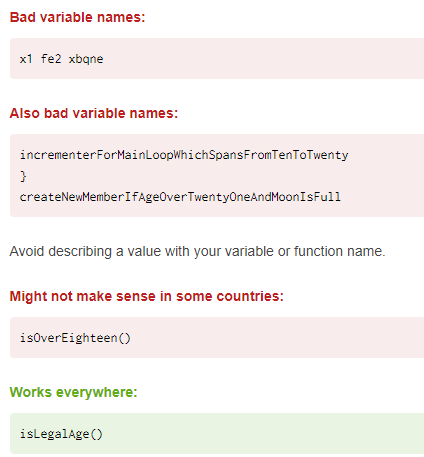
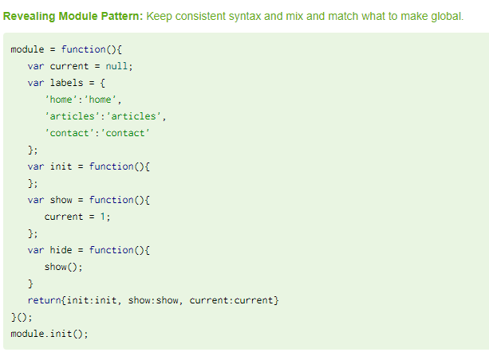
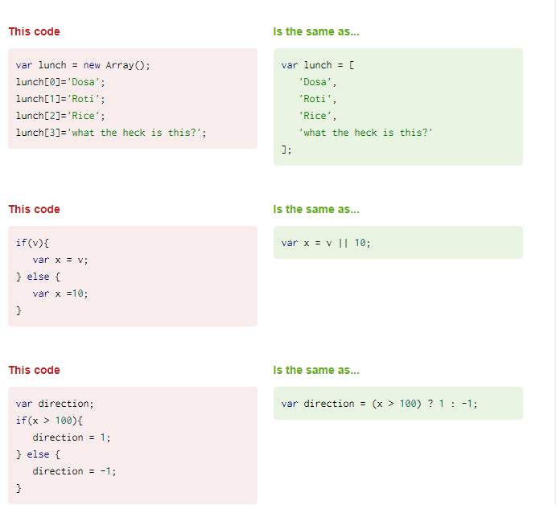
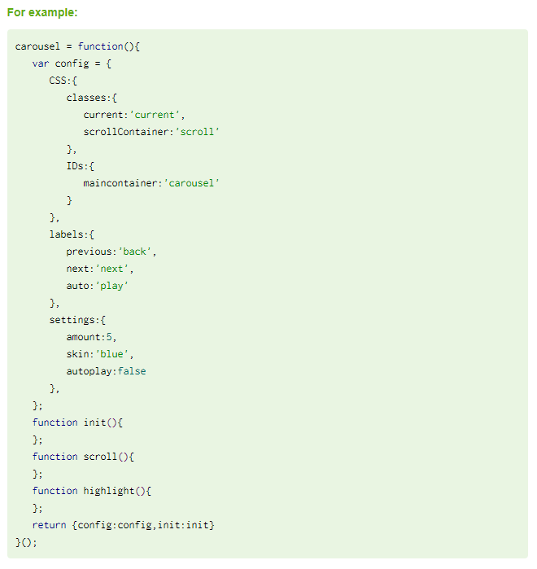

JavaScript is the most common language for making webpages interactive
This list of best practices uses code samples and side-by-side examples to help you write more readable, efficient code.sMake it Understandable

Avoid Globals

Use Shortcut Notations

Allow for Configuration and Translation
